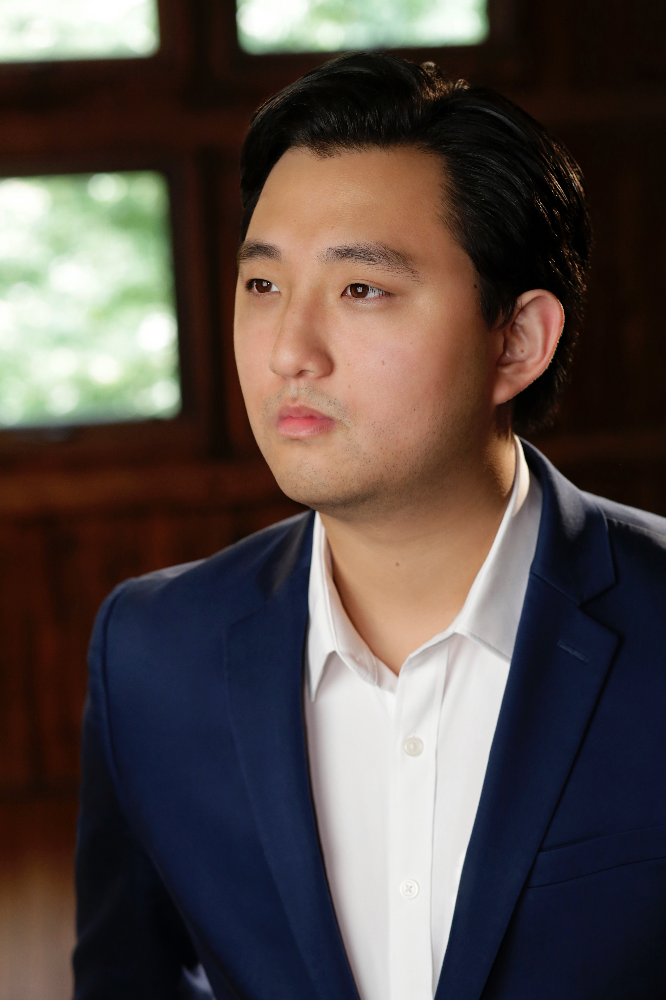

Brad Bickhardt, tenor
Praised for his “healthy and soaring tenor voice” (Herald Times), and “brilliant physical grace, timing, and precision” (Broadway World), Korean-American tenor Brad Bickhardt is vibrant and versatile in both opera and musical theatre. His 2024 season brought role debuts as Don Ottavio with Arizona Opera, as well as creating the role of Felix in the world premiere of Greg Kallor’s Frankenstein. He also appeared as Tybalt in a new production of Roméo et Juliette directed by Patricia Racette. Mr. Bickhardt made a company debut with Opera Theatre of St. Louis as A Priest in Philip Glass’ Galileo Galilei, directed by James Robinson, a company he returns to in 2025. In 2023, he starred as Tamino with Arizona Opera, and significant role debuts in 2022 included creating the role of Colin in the world premiere of We Wear the Sea Like a Coat, Tanzmeister & Scaramuccio in a new production of Ariadne auf Naxos with Arizona Opera, as well as Jumper in The Falling and the Rising. Mr. Bickhardt also reprised the role of Nemorino in L’elisir d’amore at Muddy River Opera. His 2021 season saw a company debut with Opera Naples as Gastone in La traviata and Big Deal/Diesel in West Side Story, as well as covering both Alfredo and Tony. He also returned to Opera Saratoga as a Festival Artist in productions of Man of La Mancha and Don Quichotte at Comacho’s Wedding, and remained in New York state with engagements at Tri-Cities Opera and Opera Ithaca. His 2020 season brought a role debut as Alfredo in La traviata with IU Opera Theater. Memorable performances from his 2019 season included Nemorino in L’elisir d’amore with IU Opera Theater, as well as Hanif in Gluck’s L'île de Merlin with Wolf Trap Opera. In 2018, he appeared as Njegus in The Merry Widow with Opera Saratoga in addition to performances as Tony in West Side Story with IU Opera Theater.
Mr. Bickhardt has appeared as a soloist in concert, having sung Schubert’s Mass in G, Mozart’s Missa Brevis in Bb,the Beethoven Choral Fantasy, and The Messiah with The Phoenix Symphony. Notable awards include being named a District Winner (Wisconsin) for the Metropolitan Opera National Council Auditions, an Encouragement Award from the Central Region of the Metropolitan Opera National Council Auditions, Third Place for the “Men in Opera (College Division)” with The American Prize, as well as the Shirley-Rabb Winston Award from the Society of Arts and Letters.
Mr. Bickhardt is proudly an alumnus of the young artist programs of The Marion Roose Pullin Studio at Arizona Opera, The Gerdine Young Artist Program at Opera Theatre of St. Louis, The Glimmerglass Festival, Tri Cities Opera, Opera Naples, Wolf Trap Opera, Opera Saratoga, and Charlottesville Opera in addition to receiving his Bachelor and Master degrees in Vocal Performance from Indiana University. With versatile proficiency in multiple areas of the performing arts, Mr. Bickhardt served as an Associate Instructor of Voice at Indiana University during his graduate studies in which his students were cast in principal roles with IU Theatre and IU Opera Theater. He has also received training in stage combat and is proficient in hand to hand combat, bo staff, dagger, and bullwhip.

Press Quotes
“The grease that made the gears of this production work.”- Rick Perdian, Seen and Heard International 2018
“Brad Bickhardt displayed great vocal smoothness and clarity, as well as brilliant physical grace, timing and precision—in both classical and Broadway pieces.”- Steve Callahan, Broadway World, 2024
“Has an agility he’s willing to use to convince us that his Nemorino also is not quite there but is moved by sincerity and youthful passion.”- Peter Jacobi, The Herald Times 2019
“Delivered Una Furtiva Lagrima ... with melt and adoration.”- Peter Jacobi, The Herald Times 2019
“Healthy and soaring tenor voice...A stage presence that projects a young man madly in love”- Peter Jacobi, The Herald Times 2018
“Brightly conveyed the piercing, busy-body perseverance of Goro.”- Jay Harvey, UpStage 2016